In China Employee Termination: Pulse Assumption-Log Brief for Foreign Employers (2026 Hourly Run)
Key takeaways
- In China termination work, unvalidated assumptions are often the hidden source of costly errors.
- Foreign employers should keep an explicit assumption log before approval and release.
- The highest-risk assumptions usually sit at legal route interpretation, evidence completeness, communication coherence, payroll/tax treatment, and local-practice variance.
- Converting assumptions into validation tasks improves both speed and defensibility.
- Legal depth remains necessary, but assumption discipline determines execution quality.
Pulse opener: most failures start as “reasonable assumptions”
Cross-border teams rarely fail because they ignore compliance completely. They fail because assumptions are left implicit: “the route should be fine,” “payroll will handle tax details,” or “local practice should be similar this time.” Under pressure, these assumptions become decisions without verification.
This run rotates to an assumption-log format so foreign operators can identify, validate, and close assumptions before they become dispute drivers.
Plain-language legal context first
China termination decisions are generally route-based under labor law and implementation regulations. In disputes, practical defensibility depends on coherent behavior and records aligned with the selected route.
For foreign teams, this means assumption control is a legal-risk control: if assumptions are wrong or undocumented, coherence breaks quickly.
Assumption log: what to validate before release
Assumption 1 — “Our route selection is stable”
Why it matters: route shifts late can invalidate downstream materials.
Validation status needed: route-confidence memo with explicit assumptions and approvals.
Action if unvalidated: pause drafting and reconfirm legal route.
Assumption 2 — “Evidence pack is complete”
Why it matters: missing ownership or weak traceability undermines defensibility.
Validation status needed: evidence index with owner/source/status for each critical fact.
Action if unvalidated: hold release until critical evidence items are closed.
Assumption 3 — “HR and legal tell the same story”
Why it matters: narrative drift creates contradiction risk.
Validation status needed: single approved communication baseline and change log.
Action if unvalidated: freeze communication outputs and reconcile wording.
Assumption 4 — “Settlement treatment is straightforward”
Why it matters: payroll/IIT mistakes can materially increase exposure.
Validation status needed: payroll/legal joint sign-off on settlement and tax assumptions.
Action if unvalidated: delay release and resolve treatment conflicts first.
Assumption 5 — “Local practice should align with prior cases”
Why it matters: city-level differences can change practical outcomes.
Validation status needed: local uncertainty note with option range and owner deadline.
Action if unvalidated: escalate local-practice assumption for governance decision.
Assumption 6 — “Closure is complete once documents are saved”
Why it matters: storage without retrievability weakens post-event response.
Validation status needed: retrieval test pass and closure owner sign-off.
Action if unvalidated: reopen closure and remediate archive gaps.
Practical implications for foreign operators
An assumption log makes cross-functional risk visible early. Instead of debating abstract readiness, teams can track which assumptions are validated, pending, or blocked. This improves handoffs across time zones and reduces late-stage surprises.
For leadership, assumption tracking also improves governance transparency by distinguishing known facts from unverified beliefs.
Operations module
A) SOP by role ownership
Legal: own route assumptions and legal interpretation closure.
HR: own communication assumptions and chronology integrity.
Payroll: own settlement/IIT assumptions and timing readiness.
Manager: follow approved communication boundaries.
Vendor/EOR: maintain assumption status continuity across handoffs.
B) Document checklist and validation gates
Required artifacts:
- route-confidence memo,
- evidence index,
- communication baseline,
- settlement worksheet + tax notes,
- timestamped decision log,
- local uncertainty note,
- retrieval test record.
Gate rule:
- no release with unresolved critical assumptions,
- each unresolved assumption needs owner/date and escalation path.
C) Exception pathways
Pathway A: route assumption fails → legal reset + hold.
Pathway B: evidence assumption fails → ownership remediation hold.
Pathway C: settlement assumption fails → payroll/legal escalation hold.
Pathway D: local assumption fails → governance escalation with options.
Pathway E: closure assumption fails → reopen closure until retrievability pass.
D) System controls and audit fields
Suggested fields:
assumption_idassumption_categoryvalidation_statusownerdeadlinerelease_block_flagoverride_reason
Control standards:
- auto-block release for unresolved critical assumptions,
- immutable logs for status changes and overrides,
- monthly review on recurring failed assumptions by function/location.
Common mistakes and prevention
Mistake: assumptions discussed verbally but not logged
Prevention: require written assumption records for all critical areas.
Mistake: payroll assumptions validated too late
Prevention: enforce settlement validation before communication release.
Mistake: local assumptions carried over from prior city cases
Prevention: require case-specific local uncertainty review.
Mistake: closure assumptions ignored
Prevention: make retrieval test mandatory before final close.
Mistake: no learning loop
Prevention: trend failed assumptions monthly and redesign workflows.
What to watch next
Foreign operators should watch which assumption category fails most often and where failures cluster. Repeated failures are usually process-design signals, not isolated case anomalies.
Assumption governance cadence
Use a two-tier cadence: weekly assumption log reviews for active cases, and monthly recurrence analysis for process redesign. This keeps immediate control and long-term improvement connected.
Assumption calibration and threshold policy
For multinational teams, assumption logs only work when validation thresholds are aligned. A monthly calibration session can prevent one team from marking assumptions “validated” while another would classify the same item as “pending.” Calibration should review recent cases, compare validation standards, and align what qualifies as pass evidence.
Threshold policy should also be explicit: unresolved critical assumptions in route, evidence, or settlement should block release by default. Lower-impact assumptions may proceed only with owner/date remediation and documented oversight. This keeps exception handling disciplined and reduces pressure-driven shortcuts.
Executive dashboard for assumption risk
Leadership should monitor a compact assumption dashboard:
1) critical assumption validation rate before release,
2) average time to close unresolved assumptions,
3) override frequency and rationale,
4) recurrence by assumption category and location.
When one category repeatedly fails—such as settlement assumptions—teams should prioritize process redesign and targeted training in that domain. Dashboard visibility turns assumption management from ad-hoc discussion into measurable governance.
FAQ
Is assumption logging legal advice?
No. It is an operational control framework informed by legal and practitioner sources.
Can small teams use this model?
Yes. A simple assumption register with owners and deadlines is effective.
Which assumptions are most frequently risky?
Settlement/tax and local-practice assumptions are often under-validated.
Does this replace local counsel?
No. It complements local legal/payroll advice with stronger validation discipline.
Is this model applicable across all China cities?
Baseline method is broad, but local practice differences remain important.
What KPI should leaders start with?
Critical assumption validation rate before release.
Legal appendix (secondary depth)
1) Core legal anchors
The PRC Labor Contract Law and implementation regulations provide statutory framework for termination routes and obligations. SPC interpretations provide labor-dispute application context.
2) Practitioner and market synthesis
Practitioner guidance emphasizes route coherence and execution controls. Market/payroll context reinforces settlement/tax handling as risk-sensitive domains.
3) Residual uncertainty
City-level differences and language nuance can affect edge-case outcomes; high-exposure cases should include localized professional advice.
Source-fit note for this run
This run maintained required source mix and rotated to an assumption-log structure for clearer validation discipline. Repetitive checkpoint language was replaced with assumption-to-evidence conversion logic.
Disclaimer
This content is informational only and does not constitute legal, tax, payroll, accounting, or compliance advice. Employers should seek qualified local professional advice for case-specific decisions.
Sources
- National People's Congress. Labor Contract Law of the PRC (English text). Accessed 2026-02-28: http://www.npc.gov.cn/zgrdw/englishnpc/Law/2007-12/13/content_1384064.htm
- State Council. Implementation Regulations of the Labor Contract Law (Decree No. 535). Accessed 2026-02-28: https://www.gov.cn/gongbao/content/2008/content_1124615.htm
- Supreme People's Court. Interpretation (I) on Application of Labor Dispute Law. Accessed 2026-02-28: https://www.court.gov.cn/fabu/xiangqing/243981.html
- China Briefing. Employee Termination in China. Updated 2025-10-17, accessed 2026-02-28: https://www.china-briefing.com/news/employee-termination-in-china/
- Littler. Key Recent Developments in China's Employment Law. Published 2024-03-20, accessed 2026-02-28: https://www.littler.com/news-analysis/asap/key-recent-developments-chinas-employment-law-china-us-comparative-perspective
- PwC. PRC Individual Taxes on Personal Income (Tax Summaries). Accessed 2026-02-28: https://taxsummaries.pwc.com/peoples-republic-of-china/individual/taxes-on-personal-income
Need local employment support in China?
If you need a compliance-first partner for hiring, payroll, and risk controls in China, China-Payroll.com can help evaluate the right setup.
Image Prompt Pack
Create a 16:9 hero image for article title: 'In China Employee Termination: Pulse Assumption-Log Brief for Foreign Employers (2026 Hourly Run)'. Scene: global operations team evaluating workforce model options for China market entry. Include motifs: decision m…